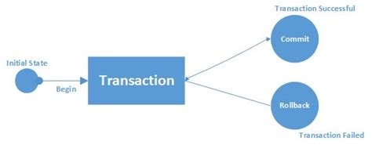

try... except...Des erreurs peuvent survenir à tout moment dans l'application, à différents endroits, à différents niveaux, et pour des raisons auxquelles on ne pense pas toujours: elles sont imprévisibles par nature. Pour ces raisons, il faut les attraper pour que le retour utilisateur soit le plus agréable et qu'elles ne génèrent pas d'autres erreurs côté applicatif, notamment dans les bases de données. Par exemple, une erreur survenue lors d'une transaction SQL d'insertion avant un commit va créer un lock sur le table concernée, qui va difficilement être supprimable. C'est pour cela qu'une erreur correctement attrapée permettra de faire, dans ce cas, un rollback.
Avec Python, le meilleur moyen d'attraper les exceptions (i.e. des erreurs détectées durant l'exécution du code) est d'utiliser l'instruction try avec des clauses except. La syntaxe est la suivante:
try:
# bloc du code que l'on souhaite exécuter
print("Tout va bien")
except Exception as e:
# bloc de code à lancer lorsqu'une erreur survient dans le try
print("Une erreur est surveneue : " + e)
Appliquons cette instruction try sur la route /insertions/pays:
# routes/insertions.py /insertions/pays
@app.route("/insertions/pays", methods=['GET', 'POST'])
def insertion_pays():
form = InsertionPays()
try:
if form.validate_on_submit():
...
except Exception as e :
print(e)
return render_template("pages/insertion_pays.html",
sous_titre= "Insertion pays" ,
form=form)
Code concerné: Seance5/try_except
Une fois l'erreur attrapée dans la clause except, plusieurs possibilités s'offrent pour réagir face à cet imprévu.
flash() La fonction flash() de Flask permet d'afficher des messages à l'utilisateur, que ce soient des messages d'erreurs ou d'information. L'avantage de cette fonction est qu'elle génère seule le HTML dans les templates une fois ceux-ci correctement configurés.
Reprenons l'exemple de la route /insertions/pays afin de faire deux messages à l'utilisateur:
Dans la route, seules deux lignes de code sont à afficher:
# routes/insertions.py /insertions/pays
...
from flask import render_template, request, flash
@app.route("/insertions/pays", methods=['GET', 'POST'])
def insertion_pays():
form = InsertionPays()
try:
if form.validate_on_submit():
...
flash("L'insertion du pays "+ nom_pays + " s'est correctement déroulée", 'info')
except Exception as e :
flash("Une erreur s'est produite lors de l'insertion de " + nom_pays + " : " + str(e), "error")
Commentaires:
flash() prend comme premier argument un message de type stringinfo, warning ou error: leur indication permet de changer la couleur de rendu sur la page WebPour que les messages s'affichent, il est nécessaire de modifier le template partials/conteneur.html afin de lui indiquer de lui afficher ce qui arrive de flash().
<!-- partials/conteneur.html -->
...
<div class="container">
{% with messages = get_flashed_messages(with_categories=true) %}
{% if messages %}
<div class="row">
<div class="col">
{% for category, message in messages %}
<div class="alert alert-{{category}}" role="alert">{{ message }}</div>
{% endfor %}
</div>
</div>
{% endif %}
{% endwith %}
<div class="row">
<div class="col">
{% block body %}{% endblock %}
</div>
</div>
</div>
...
Code concerné: Seance5/flash
ROLLBACK Comme nous l'avons vu dans le cours précédent, une transaction SQL doit se terminer par un COMMIT ou un ROLLBACK. Le rollback n'a lieu d'être que lorsqu'il y a une erreur et qu'il faut revenir dans l'état initial de la base de données. Son exécution aura donc lieu lorsque l'on aura détecté une erreur dans une transaction effectuée depuis l'application (la présence d'un rollback avec l'instruction try est nécessaire pour toutes les transactions en écriture sur la base de données). Pour détecter cette erreur, il faut utiliser l'instruction try avec la clause except.

Prenons l'exemple de la route /insertions/pays et ajoutons un rollback lorsqu'il y a une erreur.
# routes/insertions.py /insertions/pays
...
@app.route("/insertions/pays", methods=['GET', 'POST'])
def insertion_pays():
form = InsertionPays()
try:
if form.validate_on_submit():
...
db.session.add(nouveau_pays)
db.session.commit()
except Exception as e :
db.session.rollback()
return render_template("pages/insertion_pays.html",
sous_titre= "Insertion pays" ,
form=form)
Code concerné: Seance5/rollback
La redirection n'est pas spécifique aux erreurs, elle peut être utilisée dans de nombreux cas, comme par exemple:
Toutes les redirections s'écrivent de la même manière avec Flask et peuvent être positionnées n'importe où dans une route. Prenons l'exemple de la route pays définie comme suit:
# routes/generales.py /pays
@app.route("/")
@app.route("/pays")
@app.route("/pays/<int:page>")
def pays(page=1):
return render_template("pages/pays.html",
sous_titre="Pays",
donnees= Country.query.order_by(Country.name).paginate(page=page, per_page=app.config["PAYS_PER_PAGE"]))
Trois routes font en réalité appel à cette fonction pays. Pour les besoins de l'exemple, créons pour la route / une fonction accueil qui redirige automatiquement vers /pays.
# routes/generales.py /
@app.route("/")
def accueil():
return redirect(url_for("pays"))
@app.route("/pays")
@app.route("/pays/<int:page>")
def pays(page=1):
return render_template("pages/pays.html",
sous_titre="Pays",
donnees= Country.query.order_by(Country.name).paginate(page=page, per_page=app.config["PAYS_PER_PAGE"]))
Commentaires:
redirect de Flask est utileurl_forCode concerné: Seance5/redirection